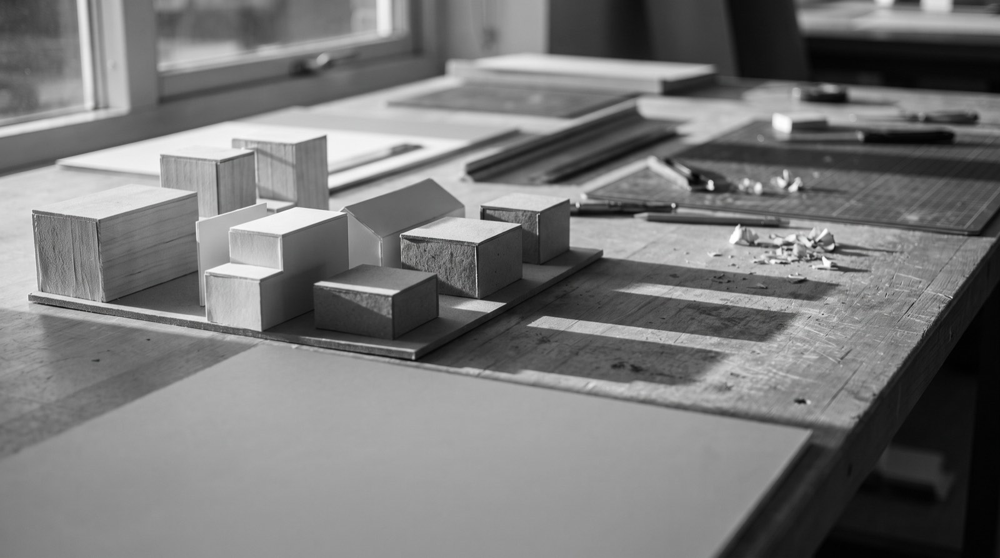

Private houses
New build and substantial renovation. Typically construction budgets from $900k, where the site or the brief has genuine difficulty in it.
A twelve-person studio working on houses, small cultural buildings and adaptive reuse. We will walk a parcel with you before you commit to it, because access, orientation and setbacks decide more than the floor plan ever will.

Roughly eight projects at a time. We are not the cheapest and we are honest about that early.
New build and substantial renovation. Typically construction budgets from $900k, where the site or the brief has genuine difficulty in it.
Industrial, agricultural and civic buildings given a second life. The constraint is the interesting part and usually the reason it works.
Small galleries, libraries and community buildings, including competition work and public procurement.
Before you buy a site or commit to a scheme. A short, paid piece of work that regularly saves people a great deal.
Five stages, and we stay through the last one — which is where most of the risk actually sits.
A short paid study: what the site allows, what it will cost, and whether the idea survives contact with reality.
Two or three genuinely different directions rather than one refined proposal. You choose a direction, not a drawing.
Resolved with engineers and costed properly. Permitting runs from here, and we handle it.
Tender, contractor selection and site administration through to completion. We do not hand over drawings and disappear.
A first conversation is free and best had standing on the land. If the site is wrong we would rather tell you before you own it.
Enquiries for 2027 now open. Feasibility studies available as standalone work.